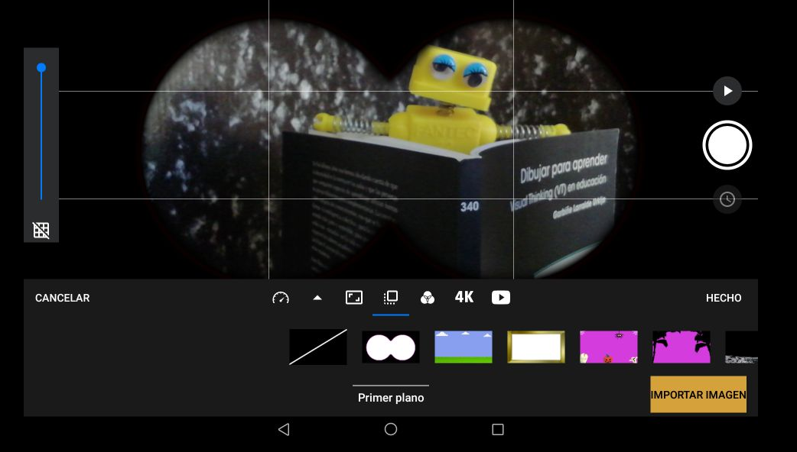

Para descargar la aplicación hay que acceder a Google Play e indicamos Stop Motion Studio:
Fuente propia(Dominio público)
Instalamos la aplicación y ya tenemos preparada la herramienta para su realización.
Paso a paso
Para realizar el proceso de creación de una película, tipo stop motion, hay que preparar el escenario donde se va a desarrollar la acción.
Una vez preparados los elementos, se procede a encender el smartphone o tablet y pulsamos sobre el icono de la aplicación que se va a utilizar para su grabación. En nuestro caso, hemos considerado Stop Motion Studio porque tiene una versión gratuita con las suficientes opciones para poder llevar esta actividad en el aula.
Fuente propia(Dominio público)
Accederemos a la aplicación que ofrece la siguiente interfaz:
Fuente propia(Dominio público)
Para comenzar a rodar la película, pulsamos sobre el +, tal y como se indica en la imagen anterior, que se indica con un flecha donde hay que pulsar.
Accedemos a la aplicación donde se va a realizar el rodaje.
Fuente propia(Dominio público)
El rodaje es sencillo. Situamos el cuadro del fotograma con los elementos que intervienen en una posición. Pulsamos el botón rojo y hacemos una fotografía.
Manteniendo la misma posición de la tablet, cambiamos ligeramente los elementos, y volvemos a pulsar el botón rojo, fotografiando la siguiente escena. Se cambia, de nuevo, la posición de los elementos y se vuelve a pulsar. Y así sucesivamente.
Una vez que hemos terminado, el programa nos da la opción de aplicarle una serie de ajustes. Para acceder a ellos, hay que pulsar sobre el engranaje que existe encima de los fotogramas y aparecerán las siguientes opciones:
1.- Velocidad de película. Nos permite determinar el número de fotogramas que queremos que pasen por segundo. Con ello, conseguiremos realizar una película con mayor velocidad o a cámara lenta.
Fuente propia(Dominio público)
2.- Formato de Salida. Son las opciones que le podemos aplicar a nuestra película HDTV, Cinema, Cuadrado...
Fuente propia(Dominio público)
3.- Primer plano. Nos ofrece opciones diversas para poner alguna máscara a nuestros fotogramas o escenas.

Fuente propia(Dominio público)
4.- Efecto. Consiste en aplicar diversos tonos a los fotogramas.
Fuente propia(Dominio público)
5.- Calidad. Los tipos ofrecidos son HD, HQ. 4K...
Fuente propia(Dominio público)
6.- Cómo reproducir el vídeo. Y nos ofrece dos opciones:
Fuente propia(Dominio público)
Una vez configurada, ya sólo tenemos que abandonar la pantalla de edición pulsando la flecha que aparece en el lateral izquierda en la parte inferior.
Fuente propia(Dominio público)
Y nos aparece la pantalla inicial, con las películas que hemos realizado con la aplicación:
Fuente propia(Dominio público)
Exportar película
Una vez realizada la película, tenemos que exportar la película.
Para ello, seguimos los siguientes pasos:
1.- Seleccionamos el vídeo y pulsamos el icono exportar.
Fuente propia(Dominio público)
Elegimos el formato de salida: exportar película, animated gif, imágenes, folioscopio y proyecto.
2.- Seleccionamos a través de que aplicación se desea compartir el vídeo.